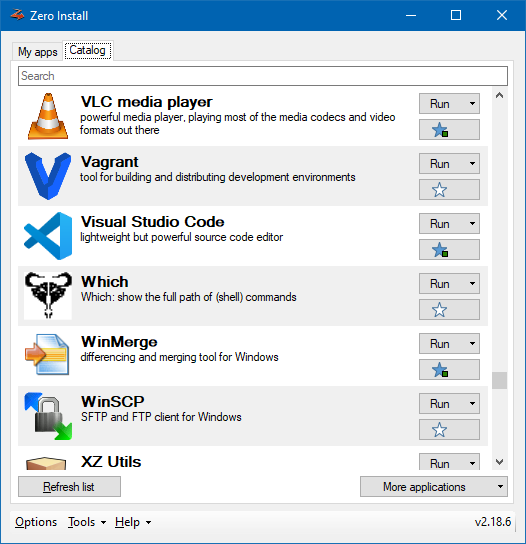

Catalog files¶
This document is a formal description of the XML catalog format. A catalog contains meta-data for a collection of feeds. Catalogs make it easier to find feeds for specific applications.
Syntax¶
Catalog files have the following syntax (? follows optional items, * means zero-or-more, order of elements is not important, and extension elements can appear anywhere as long as they use a different namespace):
<?xml version='1.0'?>
<catalog xmlns='http://0install.de/schema/injector/catalog'>
<interface uri='...' xmlns='http://zero-install.sourceforge.net/2004/injector/interface'>
<name>...</name>
<summary>...</summary>
<description>...</description> ?
<homepage>...</homepage> ?
<category type='...' ? >...</category> *
<needs-terminal/> ?
<icon type='...' href='...'/> *
<entry-point command='...' binary-name='...' ? /> *
</interface> *
</catalog>
The syntax within <interface> elements is identical to that of feeds.
Each <interface> element represents a feed and contains a copy of that feed's body. However, <implementation>, <group>, <feed>, <feed-for> and <replaced-by> elements are omitted. They should instead be taken from the original feed, which can be downloaded from the specified uri when required.
Digital signatures¶
When a catalog is downloaded from the web, it must contain a digital signature. A catalog is signed by appending an XML comment block of the form:
<!-- Base64 Signature
iD8DBQBEXM/qrgeCgFmlPMERArNSAKDBuNz5SQMZ8rwJmW2fhNHJwor6KwCgwx7XEfY+6gUC90rJ
b5eCY+I8HNA=
-->
This block must go at the end of the file, and contains a Base64-encoded version of the file that would be created by using gpg --detach-sign on the original feed. The signature block must start on a new line, may not contain anything except valid base64 characters, and nothing may follow the signature block.
This is identical to the signature format used by feeds.
Generating¶
Catalog files are automatically generated by 0repo.
You can also manually generate a catalog from a set of feeds downloaded to a local directory:
0install run https://apps.0install.net/0install/0publish.xml feeds/*.xml --catalog=catalog.xml --xmlsign
Note
A catalog generated like this points to the locations the feeds originally came from, not the local XML files on your disk.
Usage¶
Catalog files are currently only used by Zero Install for Windows.
You can search for feeds in catalogs like this:
0install catalog search KEYWORD
See the command-line interface documentation for more commands.
Short names¶
Catalogs allow you to use short names on the command-line instead of entering full feed URIs. Short names are either equal to the application <name> as listed in the catalog (spaces replaced with dashes) or the application's binary-name specified in an <entry-point>.
For example, instead of 0install run https://apps.0install.net/gui/vlc.xml you can use:
0install run vlc-media-player(application name) or0install run vlc(executable file name)
GUI¶
The main GUI of Zero Install for Windows displays a list of available applications populated by one or more catalogs. The default catalog can be extended with or replaced by custom catalogs in the Catalog tab of the Options window.

Well-known catalogs¶
- https://apps.0install.net/ - repository of common tools, libraries and runtime environments